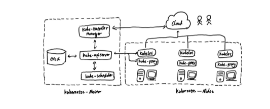

<!doctype html>
<html lang="en" class="no-js">
  <head>
    
      <meta charset="utf-8">
      <meta name="viewport" content="width=device-width,initial-scale=1">
      
      
      
      
      
      <link rel="icon" href="../../assets/favicon.png">
      <meta name="generator" content="mkdocs-1.4.2, mkdocs-material-9.0.15">
    
    
      
        <title>Prometheus与Kubernetes - Prometheus Learning Path</title>
      
    
    
      <link rel="stylesheet" href="../../assets/stylesheets/main.113286f1.min.css">
      
        
        <link rel="stylesheet" href="../../assets/stylesheets/palette.a0c5b2b5.min.css">
      
      

    
    
    
      
        
        
        <link rel="preconnect" href="https://fonts.gstatic.com" crossorigin>
        <link rel="stylesheet" href="https://fonts.googleapis.com/css?family=Roboto:300,300i,400,400i,700,700i%7CRoboto+Mono:400,400i,700,700i&display=fallback">
        <style>:root{--md-text-font:"Roboto";--md-code-font:"Roboto Mono"}</style>
      
    
    
    <script>__md_scope=new URL("../..",location),__md_hash=e=>[...e].reduce((e,_)=>(e<<5)-e+_.charCodeAt(0),0),__md_get=(e,_=localStorage,t=__md_scope)=>JSON.parse(_.getItem(t.pathname+"."+e)),__md_set=(e,_,t=localStorage,a=__md_scope)=>{try{t.setItem(a.pathname+"."+e,JSON.stringify(_))}catch(e){}}</script>
    
      

    
    
    
  </head>
  
  
    
    
    
    
    
    <body dir="ltr" data-md-color-scheme="default" data-md-color-primary="indigo" data-md-color-accent="">
  
    
    
    <input class="md-toggle" data-md-toggle="drawer" type="checkbox" id="__drawer" autocomplete="off">
    <input class="md-toggle" data-md-toggle="search" type="checkbox" id="__search" autocomplete="off">
    <label class="md-overlay" for="__drawer"></label>
    <div data-md-component="skip">
      
        
        <a href="#prometheuskubernetes" class="md-skip">
          Skip to content
        </a>
      
    </div>
    <div data-md-component="announce">
      
    </div>
    
    
      

<header class="md-header" data-md-component="header">
  <nav class="md-header__inner md-grid" aria-label="Header">
    <a href="../.." title="Prometheus Learning Path" class="md-header__button md-logo" aria-label="Prometheus Learning Path" data-md-component="logo">
      
  

    </a>
    <label class="md-header__button md-icon" for="__drawer">
      <svg xmlns="http://www.w3.org/2000/svg" viewBox="0 0 24 24"><path d="M3 6h18v2H3V6m0 5h18v2H3v-2m0 5h18v2H3v-2Z"/></svg>
    </label>
    <div class="md-header__title" data-md-component="header-title">
      <div class="md-header__ellipsis">
        <div class="md-header__topic">
          <span class="md-ellipsis">
            Prometheus Learning Path
          </span>
        </div>
        <div class="md-header__topic" data-md-component="header-topic">
          <span class="md-ellipsis">
            
              Prometheus与Kubernetes
            
          </span>
        </div>
      </div>
    </div>
    
    
    
      <label class="md-header__button md-icon" for="__search">
        <svg xmlns="http://www.w3.org/2000/svg" viewBox="0 0 24 24"><path d="M9.5 3A6.5 6.5 0 0 1 16 9.5c0 1.61-.59 3.09-1.56 4.23l.27.27h.79l5 5-1.5 1.5-5-5v-.79l-.27-.27A6.516 6.516 0 0 1 9.5 16 6.5 6.5 0 0 1 3 9.5 6.5 6.5 0 0 1 9.5 3m0 2C7 5 5 7 5 9.5S7 14 9.5 14 14 12 14 9.5 12 5 9.5 5Z"/></svg>
      </label>
      <div class="md-search" data-md-component="search" role="dialog">
  <label class="md-search__overlay" for="__search"></label>
  <div class="md-search__inner" role="search">
    <form class="md-search__form" name="search">
      <input type="text" class="md-search__input" name="query" aria-label="Search" placeholder="Search" autocapitalize="off" autocorrect="off" autocomplete="off" spellcheck="false" data-md-component="search-query" required>
      <label class="md-search__icon md-icon" for="__search">
        <svg xmlns="http://www.w3.org/2000/svg" viewBox="0 0 24 24"><path d="M9.5 3A6.5 6.5 0 0 1 16 9.5c0 1.61-.59 3.09-1.56 4.23l.27.27h.79l5 5-1.5 1.5-5-5v-.79l-.27-.27A6.516 6.516 0 0 1 9.5 16 6.5 6.5 0 0 1 3 9.5 6.5 6.5 0 0 1 9.5 3m0 2C7 5 5 7 5 9.5S7 14 9.5 14 14 12 14 9.5 12 5 9.5 5Z"/></svg>
        <svg xmlns="http://www.w3.org/2000/svg" viewBox="0 0 24 24"><path d="M20 11v2H8l5.5 5.5-1.42 1.42L4.16 12l7.92-7.92L13.5 5.5 8 11h12Z"/></svg>
      </label>
      <nav class="md-search__options" aria-label="Search">
        
        <button type="reset" class="md-search__icon md-icon" title="Clear" aria-label="Clear" tabindex="-1">
          <svg xmlns="http://www.w3.org/2000/svg" viewBox="0 0 24 24"><path d="M19 6.41 17.59 5 12 10.59 6.41 5 5 6.41 10.59 12 5 17.59 6.41 19 12 13.41 17.59 19 19 17.59 13.41 12 19 6.41Z"/></svg>
        </button>
      </nav>
      
    </form>
    <div class="md-search__output">
      <div class="md-search__scrollwrap" data-md-scrollfix>
        <div class="md-search-result" data-md-component="search-result">
          <div class="md-search-result__meta">
            Initializing search
          </div>
          <ol class="md-search-result__list" role="presentation"></ol>
        </div>
      </div>
    </div>
  </div>
</div>
    
    
  </nav>
  
</header>
    
    <div class="md-container" data-md-component="container">
      
      
        
          
        
      
      <main class="md-main" data-md-component="main">
        <div class="md-main__inner md-grid">
          
            
              
              <div class="md-sidebar md-sidebar--primary" data-md-component="sidebar" data-md-type="navigation" >
                <div class="md-sidebar__scrollwrap">
                  <div class="md-sidebar__inner">
                    


<nav class="md-nav md-nav--primary" aria-label="Navigation" data-md-level="0">
  <label class="md-nav__title" for="__drawer">
    <a href="../.." title="Prometheus Learning Path" class="md-nav__button md-logo" aria-label="Prometheus Learning Path" data-md-component="logo">
      
  

    </a>
    Prometheus Learning Path
  </label>
  
  <ul class="md-nav__list" data-md-scrollfix>
    
      
      
      

  
  
  
    <li class="md-nav__item">
      <a href="../../catalogue/" class="md-nav__link">
        目录
      </a>
    </li>
  

    
      
      
      

  
  
  
    
    <li class="md-nav__item md-nav__item--nested">
      
      
      
      
      <input class="md-nav__toggle md-toggle " type="checkbox" id="__nav_2" >
      
      
      
        <label class="md-nav__link" for="__nav_2" id="__nav_2_label" tabindex="0">
          第1章 天降奇兵
          <span class="md-nav__icon md-icon"></span>
        </label>
      
      <nav class="md-nav" data-md-level="1" aria-labelledby="__nav_2_label" aria-expanded="false">
        <label class="md-nav__title" for="__nav_2">
          <span class="md-nav__icon md-icon"></span>
          第1章 天降奇兵
        </label>
        <ul class="md-nav__list" data-md-scrollfix>
          
            
              
  
  
  
    <li class="md-nav__item">
      <a href="../../quickstart/why-monitor/" class="md-nav__link">
        Prometheus简介
      </a>
    </li>
  

            
          
            
              
  
  
  
    <li class="md-nav__item">
      <a href="../../quickstart/prometheus-quick-start/" class="md-nav__link">
        初识Prometheus
      </a>
    </li>
  

            
          
            
              
  
  
  
    <li class="md-nav__item">
      <a href="../../quickstart/install-prometheus-server/" class="md-nav__link">
        安装Prometheus
      </a>
    </li>
  

            
          
            
              
  
  
  
    <li class="md-nav__item">
      <a href="../../quickstart/use-node-exporter/" class="md-nav__link">
        使用Node Exporter采集主机数据
      </a>
    </li>
  

            
          
            
              
  
  
  
    <li class="md-nav__item">
      <a href="../../quickstart/promql_quickstart/" class="md-nav__link">
        使用PromQL查询监控数据
      </a>
    </li>
  

            
          
            
              
  
  
  
    <li class="md-nav__item">
      <a href="../../quickstart/use-grafana-create-dashboard" class="md-nav__link">
        监控数据可视化
      </a>
    </li>
  

            
          
            
              
  
  
  
    <li class="md-nav__item">
      <a href="../../quickstart/prometheus-job-and-instance/" class="md-nav__link">
        任务和实例
      </a>
    </li>
  

            
          
            
              
  
  
  
    <li class="md-nav__item">
      <a href="../../quickstart/prometheus-arch/" class="md-nav__link">
        Prometheus核心组件
      </a>
    </li>
  

            
          
            
              
  
  
  
    <li class="md-nav__item">
      <a href="../../quickstart/SUMMARY/" class="md-nav__link">
        小结
      </a>
    </li>
  

            
          
        </ul>
      </nav>
    </li>
  

    
      
      
      

  
  
  
    
    <li class="md-nav__item md-nav__item--nested">
      
      
      
      
      <input class="md-nav__toggle md-toggle " type="checkbox" id="__nav_3" >
      
      
      
        <label class="md-nav__link" for="__nav_3" id="__nav_3_label" tabindex="0">
          第二章 探索PromQL
          <span class="md-nav__icon md-icon"></span>
        </label>
      
      <nav class="md-nav" data-md-level="1" aria-labelledby="__nav_3_label" aria-expanded="false">
        <label class="md-nav__title" for="__nav_3">
          <span class="md-nav__icon md-icon"></span>
          第二章 探索PromQL
        </label>
        <ul class="md-nav__list" data-md-scrollfix>
          
            
              
  
  
  
    <li class="md-nav__item">
      <a href="../../promql/what-is-prometheus-metrics-and-labels/" class="md-nav__link">
        理解时间序列
      </a>
    </li>
  

            
          
        </ul>
      </nav>
    </li>
  

    
      
      
      

  
  
  
    
    <li class="md-nav__item md-nav__item--nested">
      
      
      
      
      <input class="md-nav__toggle md-toggle " type="checkbox" id="__nav_4" >
      
      
      
        <label class="md-nav__link" for="__nav_4" id="__nav_4_label" tabindex="0">
          第3章 Prometheus告警处理
          <span class="md-nav__icon md-icon"></span>
        </label>
      
      <nav class="md-nav" data-md-level="1" aria-labelledby="__nav_4_label" aria-expanded="false">
        <label class="md-nav__title" for="__nav_4">
          <span class="md-nav__icon md-icon"></span>
          第3章 Prometheus告警处理
        </label>
        <ul class="md-nav__list" data-md-scrollfix>
          
            
              
  
  
  
    <li class="md-nav__item">
      <a href="../../alert/prometheus-alert-manager-overview/" class="md-nav__link">
        Prometheus告警简介
      </a>
    </li>
  

            
          
        </ul>
      </nav>
    </li>
  

    
      
      
      

  
  
  
    
    <li class="md-nav__item md-nav__item--nested">
      
      
      
      
      <input class="md-nav__toggle md-toggle " type="checkbox" id="__nav_5" >
      
      
      
        <label class="md-nav__link" for="__nav_5" id="__nav_5_label" tabindex="0">
          第4章 Exporter详解
          <span class="md-nav__icon md-icon"></span>
        </label>
      
      <nav class="md-nav" data-md-level="1" aria-labelledby="__nav_5_label" aria-expanded="false">
        <label class="md-nav__title" for="__nav_5">
          <span class="md-nav__icon md-icon"></span>
          第4章 Exporter详解
        </label>
        <ul class="md-nav__list" data-md-scrollfix>
          
            
              
  
  
  
    <li class="md-nav__item">
      <a href="../../exporter/what-is-prometheus-exporter/" class="md-nav__link">
        Exporter是什么
      </a>
    </li>
  

            
          
        </ul>
      </nav>
    </li>
  

    
  </ul>
</nav>
                  </div>
                </div>
              </div>
            
            
              
              <div class="md-sidebar md-sidebar--secondary" data-md-component="sidebar" data-md-type="toc" >
                <div class="md-sidebar__scrollwrap">
                  <div class="md-sidebar__inner">
                    

<nav class="md-nav md-nav--secondary" aria-label="Table of contents">
  
  
  
    
  
  
    <label class="md-nav__title" for="__toc">
      <span class="md-nav__icon md-icon"></span>
      Table of contents
    </label>
    <ul class="md-nav__list" data-md-component="toc" data-md-scrollfix>
      
        <li class="md-nav__item">
  <a href="#kubernetes" class="md-nav__link">
    Kubernetes架构
  </a>
  
</li>
      
        <li class="md-nav__item">
  <a href="#kubernetes_1" class="md-nav__link">
    监控Kubernetes
  </a>
  
</li>
      
    </ul>
  
</nav>
                  </div>
                </div>
              </div>
            
          
          
            <div class="md-content" data-md-component="content">
              <article class="md-content__inner md-typeset">
                
                  


<h1 id="prometheuskubernetes">Prometheus与Kubernetes</h1>
<p>Kubernetes作为开源的容器编排工具，为用户提供了一个可以统一调度，统一管理的云操作系统。其解决如用户应用程序如何运行的问题。而一旦在生产环境中大量基于Kubernetes部署和管理应用程序后，作为系统管理员，还需要充分了解应用程序以及Kubernetes集群服务运行质量如何，通过对应用以及集群运行状态数据的收集和分析，持续优化和改进，从而提供一个安全可靠的生产运行环境。 这一小节中我们将讨论当使用Kubernetes时的监控策略该如何设计。</p>
<h2 id="kubernetes">Kubernetes架构</h2>
<p>为了能够更好的理解Kubernetes下的监控体系，我们需要了解Kubernetes的基本架构，如下所示，是Kubernetes的架构示意图：</p>
<p></p>
<p>Kubernetes的核心组件主要由两部分组成：Master组件和Node组件，其中Matser组件提供了集群层面的管理功能，它们负责响应用户请求，处理集群实际，并且对集群资源进行统一的调度和管理。Node组件会运行在集群的所有节点上，它们负责管理和维护节点中运行的Pod，为Kubernetes集群提供运行时环境。</p>
<p>Master组件主要包括：</p>
<ul>
<li>kube-apiserver：负责对外暴露Kubernetes API；</li>
<li>etcd：用于存储Kubernetes集群的所有数据；</li>
<li>kube-scheduler: 负责为新创建的Pod选择可供其运行的节点；</li>
<li>kube-controller-manager： 包含Node Controller，Deployment Controller，Endpoint Controller等等，通过与apiserver交互使相应的资源达到预期状态。</li>
</ul>
<p>Node组件主要包括：</p>
<ul>
<li>kubelet：负责维护和管理节点上Pod的运行状态；</li>
<li>kube-proxy：负责维护主机上的网络规则以及转发。</li>
<li>Container Runtime：如Docker,rkt,runc等提供容器运行时环境。</li>
</ul>
<h2 id="kubernetes_1">监控Kubernetes</h2>
<p>从物理结构上讲Kubernetes主要用于整合和管理底层的基础设施资源，对外提供应用容器的自动化部署和管理能力，这些基础设施可能是物理机、虚拟机、云主机等等。因此，基础资源的使用直接影响当前集群的容量和应用的状态。在这部分，我们需要关注集群中各个节点的主机负载，CPU使用率、内存使用率、存储空间以及网络吞吐等监控指标。</p>
<p>从自身架构上讲，kube-apiserver是Kubernetes提供所有服务的入口，无论是外部的客户端还是集群内部的组件都直接与kube-apiserver进行通讯。因此，kube-apiserver的并发和吞吐量直接决定了集群性能的好坏。其次，对于外部用户而言，Kubernetes是否能够快速的完成pod的调度以及启动，是影响其使用体验的关键因素。而这个过程主要由kube-scheduler负责完成调度工作，而kubelet完成pod的创建和启动工作。因此在Kubernetes集群本身我们需要评价其自身的服务质量，主要关注在Kubernetes的API响应时间，以及Pod的启动时间等指标上。</p>
<p>Kubernetes的最终目标还是需要为业务服务，因此我们还需要能够监控应用容器的资源使用情况。对于内置了对Prometheus支持的应用程序，也要支持从这些应用程序中采集内部的监控指标。最后，结合黑盒监控模式，对集群中部署的服务进行探测，从而当应用发生故障后，能够快速处理和恢复。</p>
<p>因此，在不考虑Kubernetes自身组件的情况下，如果要构建一个完整的监控体系，我们应该考虑，以下5个方面：</p>
<ul>
<li>集群节点状态监控：从集群中各节点的kubelet服务获取节点的基本运行状态；</li>
<li>集群节点资源用量监控：通过Daemonset的形式在集群中各个节点部署Node Exporter采集节点的资源使用情况；</li>
<li>节点中运行的容器监控：通过各个节点中kubelet内置的cAdvisor中获取个节点中所有容器的运行状态和资源使用情况；</li>
<li>从黑盒监控的角度在集群中部署Blackbox Exporter探针服务，检测Service和Ingress的可用性；</li>
<li>如果在集群中部署的应用程序本身内置了对Prometheus的监控支持，那么我们还应该找到相应的Pod实例，并从该Pod实例中获取其内部运行状态的监控指标。</li>
</ul>


                
              </article>
            </div>
          
          
        </div>
        
      </main>
      
        <footer class="md-footer">
  
  <div class="md-footer-meta md-typeset">
    <div class="md-footer-meta__inner md-grid">
      <div class="md-copyright">
  
  
    Made with
    <a href="https://squidfunk.github.io/mkdocs-material/" target="_blank" rel="noopener">
      Material for MkDocs
    </a>
  
</div>
      
    </div>
  </div>
</footer>
      
    </div>
    <div class="md-dialog" data-md-component="dialog">
      <div class="md-dialog__inner md-typeset"></div>
    </div>
    
    <script id="__config" type="application/json">{"base": "../..", "features": [], "search": "../../assets/javascripts/workers/search.208ed371.min.js", "translations": {"clipboard.copied": "Copied to clipboard", "clipboard.copy": "Copy to clipboard", "search.result.more.one": "1 more on this page", "search.result.more.other": "# more on this page", "search.result.none": "No matching documents", "search.result.one": "1 matching document", "search.result.other": "# matching documents", "search.result.placeholder": "Type to start searching", "search.result.term.missing": "Missing", "select.version": "Select version"}}</script>
    
    
      <script src="../../assets/javascripts/bundle.2a6f1dda.min.js"></script>
      
    
  </body>
</html>